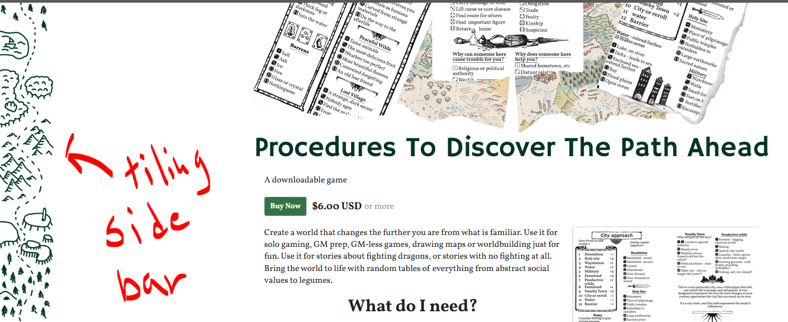
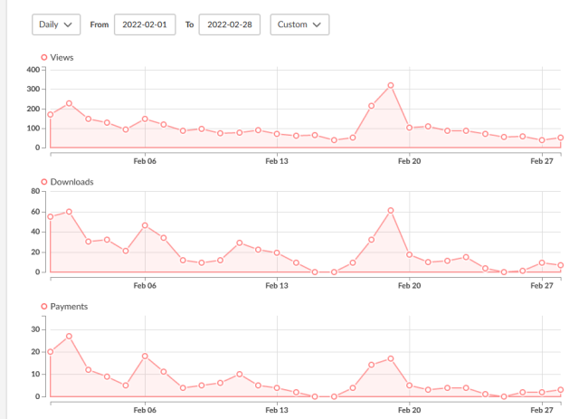
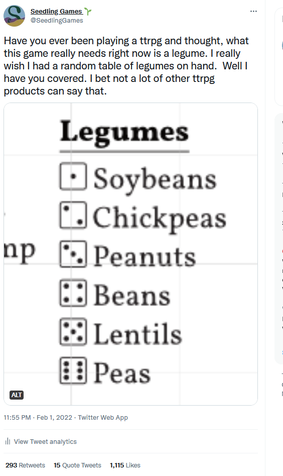

My First Zine Themed Month
Ths is not the first time I itchfunded a game (you can see my blog post about that first time here, nor is it the first time I posted about the financials of making a game (you can read about the first game I published here) but it is the first time that I participated in some sort of crowdfunding month. In this case, it was Zine Month, What I learned is, basically:
- If you are largely a hobbyist creator, something like itchfunding during an event like Zine Month gets a lot more eyes on your product. If you're used to doing kickstarters, you might be disappointed, but Zine Month did a good job of getting little zines published for people who don't have much experience with that stuff.
- Asking people to let you know if they intend to buy a physical copy of a zine does not work, you have to get them to actually buy it up front, this probably should have been obvious but I am not good at business.
You can also find a much more general postmortem here, for a different perspective on it.
The game in question was Procedures to Discover the Path Ahead, which you can find here. Physical copies from the US are itch-only, but it's coming very soon to Ratti Incantati. In total, I made $1441.42 on 301 sales.
Preparation
In terms of preparation, I had a largely complete and playable first draft that I'd developed over the last few months. This gave me the confidence to actually take people's money. I am never quite sure I can pull off a project until I've got something complete and playbable, that's the problem with creative projects.
I intended to use itchfunding to be able to hire an editor, something I'd never done before, and print physical copies. I also hoped to get an idea of how many physical copies I should print. I set up a mailing list (you can find it here), spent a lot more time posting on twitter, and a bit of time I think on Reddit, and did some cross-promotin with other projects. I did not make a press kit. I did put more effort than usual into my itch page though, no idea if anyone noticed:
I put up a very early version in January and made $291 on it, which was already a personal record for any particular product.
Marketing
Sadly, I did not save the referrer information on the analytics page on itch, and it seems I can only see back 30 days, but one thing that I learned is that if you get enough interest on itch, you do start seeing organic traffic. I also got a decent amount of visits from twitter, especially after some posts about the process of making the game took off. Even if not complete, having some screenshots of the game to show really helped a lot, I think. I did some cross-promotion with other sort of similar projects as well.
I did not make a press kit. I believe I posted a bit on Reddit, but posted mostly on twitter. I posted some more serious posts showing the game in action, showing screenshots of what I was working on, etc, but this was by far my most successful post:
The second peak was Creator Day, which really helped a lot, though it could also be that people were holding off until that day.
By the end I was actually kind of worried about how successful it has been and deliberately stopped advertising it because I was worried about it getting beyond what I could handle. I think my previous record was like $100 of sales in one month.
I had some very minor, just for fun stretch goals, but I don't think they made any difference, besides giving me an excuse to keep posting a progress graphic:

This kept me posting about it every few days, and was fun to make. It's also thematically appropriate because I used PTDTPA in order to pick what square to draw next.
Results
By the end of the month, I made $1411.42, or 1123.21 after Itch fees. I generally kept costs low by using stock art from Patreons and DriveThru (Perplexing Ruins, Evlyn Moreau, Thomasno, Feral Indie Studio and Direquest). I would like to commission art in the future, but wanted to make use of all the art I already had, most of it in a style that was suited for the tone I wanted to strike with Procedures to Discover the Path Ahead. I had a lot of fun (read: spent way too much time) figuring out how to piece them all together into a cohesive whole.
Physical Printing; Or; In Which Seedling Is Bad At Business
The way that I determined how many physical copies to print was to make reserving a physical copy a reward on itch.io. I didn't ask for money upfront because I was afraid of something going wrong, especially with rising costs. It turns out that was a mistake.
214 indicated they wanted a copy, and while I assumed some of them would flake, I thought it would be roughly indicative of interest in physical copies. But in the end, only 48 of those people have ordered a physical copy so far (plus an additional 6 who have ordered it separately.) Luckily, I've covered the cost of printing them, so really the main cost is to my pride and to the floor space the box is taking up.
I looked into getting the zine printed locally rather than through Mixam. Unfortunately, I had decided to make it A6. This let me send it in a letter-sized envelope, which made fulfilment within the US much easier. Unfortunately, it turns out that many smaller printers are not set up to be able to do smaller sizes easily. The cost ended up being prohibitive, many times more expensive than Mixam. I still hope to work with a local printer in the future, but will have to plan the project around what they can do.
Written July 24 2022